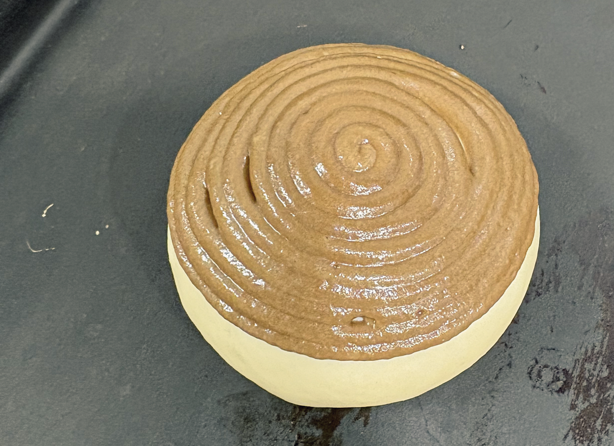
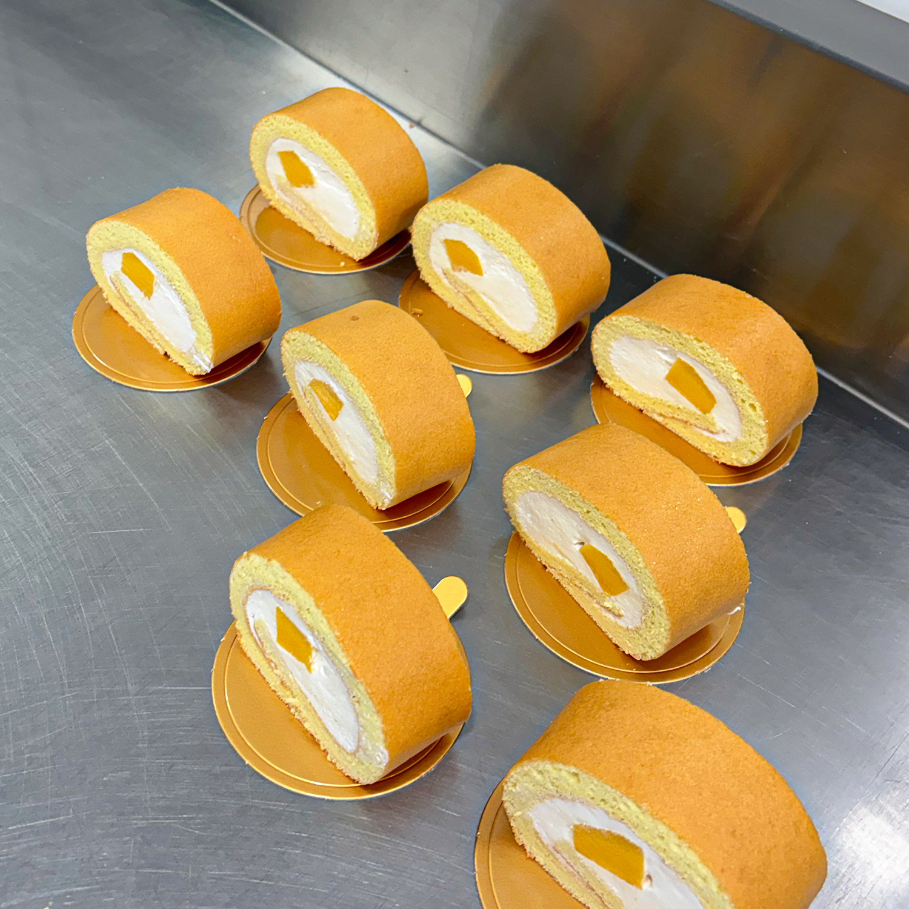
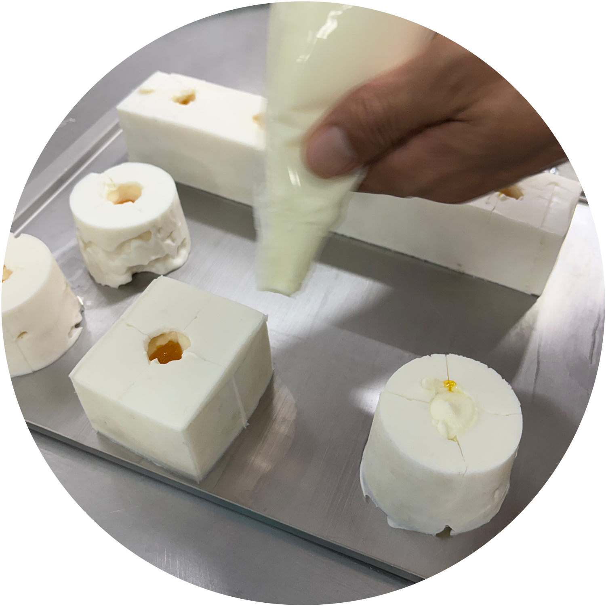
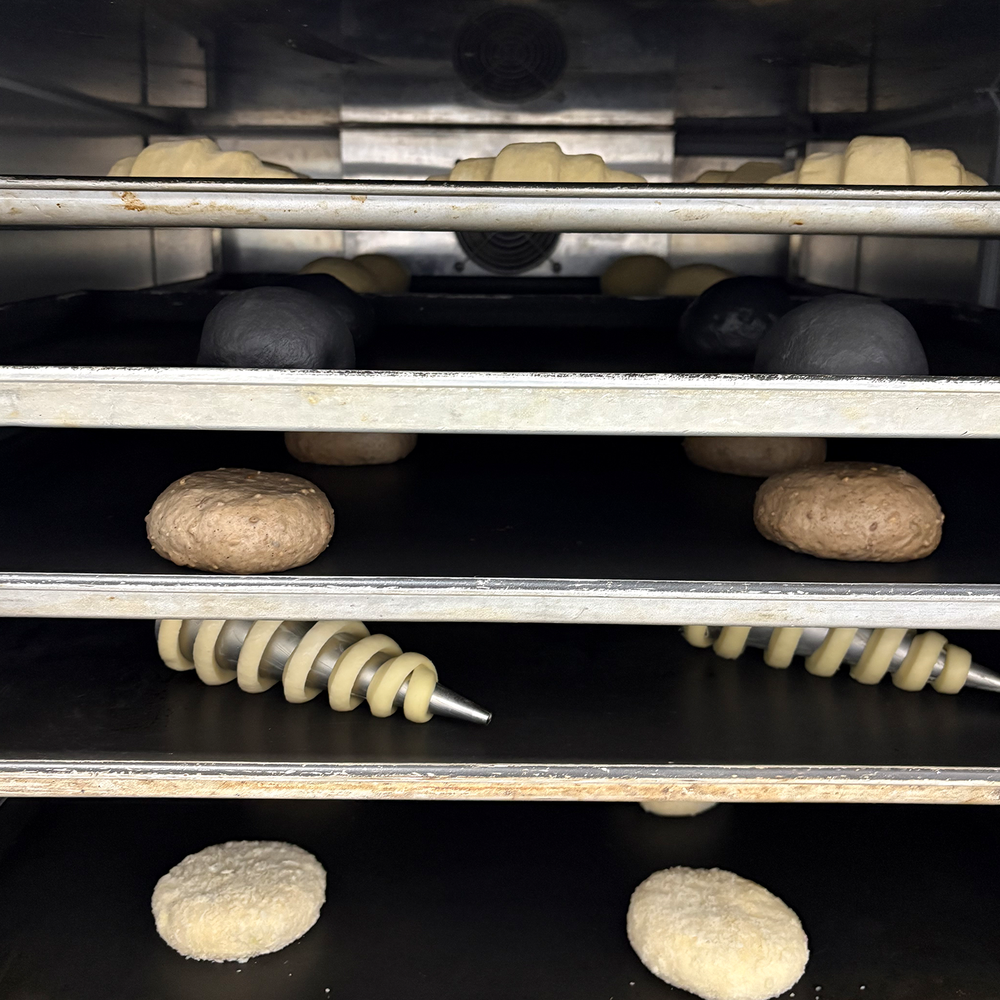
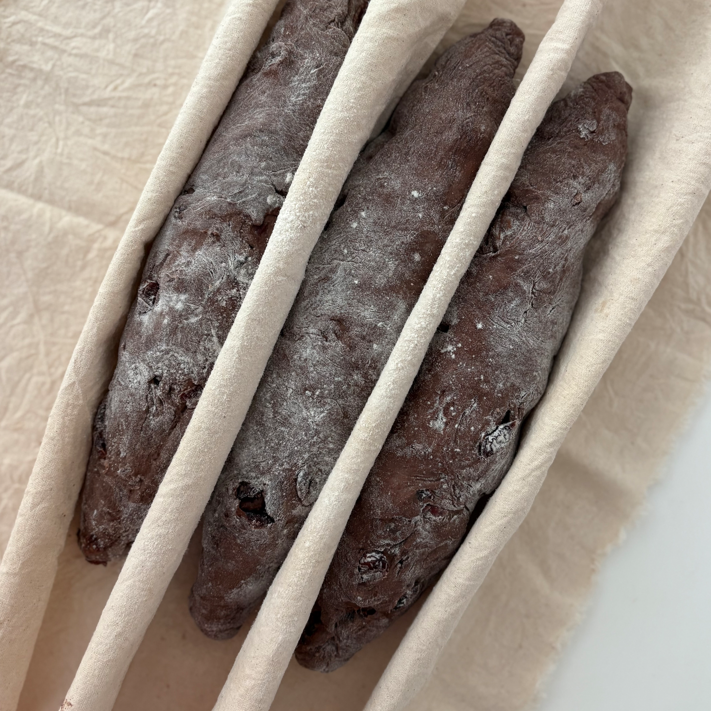
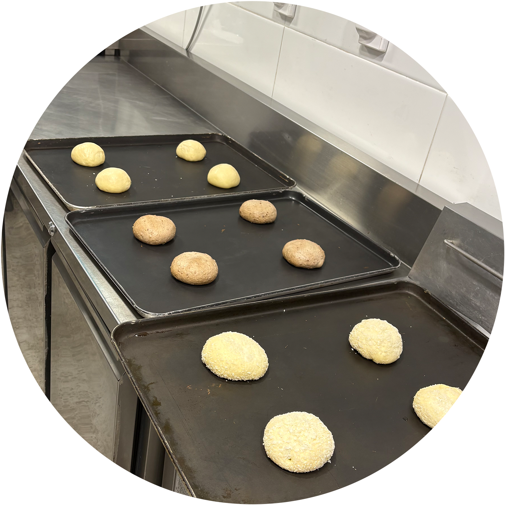
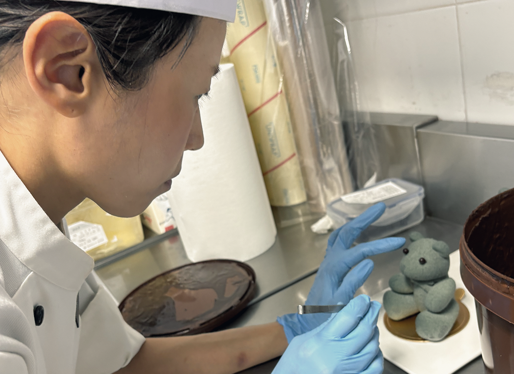

Don’t go baking my heart.
My Notes

반죽 공정의 순서와 휴지, 그리고 유지방의 유화 상태가 구조에 미치는 영향을 중심으로 지속적인 실험을 진행해왔다. 같은 재료라도 혼합 순서와 유화 안정도에 따라 조직과 결과가 달라진다는 점을 반복을 통해 확인했다. 별립법, 공립법, 크림법, 블렌딩법, 1단계법, 시폰형 등 다양한 제법을 비교하며, 공기 함량에 따른 조직감·촉촉함·안정성의 변화를 관찰했다. 특히 공기의 형성과 유지 방식이 크럼의 입자와 완성도에 가장 직접적인 영향을 준다는 점에 집중했다. 이러한 과정을 통해 제법별 구조적 차이를 이해하게 되었고, 현재는 제누아즈에 한해서는 원하는 조직을 비교적 안정적으로 구현할 수 있었다.


일요일 아침, 눈을 뜨면 가장 먼저 시폰 반죽을 한다.
후딱 해먹기 좋은 시폰법. 역시 빠르고 맛있는게 최고다.
곧 쑥 제철이다.
쑥 제누아즈에 콩크림을 가득 채운 나만의 브런치는
먹을 때마다, 늘 감동이다.

선물하기에 가장 좋은 빵은 롤케이크 아닐까.
냉동 보관도 가능하고, 누구나 익숙한 맛이다. 내 예상보다 더 촉촉해야 한다. 시트도, 크림도.
ph에 함량에 따라 구워진 향과 부피가 달라 매번 비율을 다르게 해본다.

요즘 푹 빠져 있는 탕종법.
르방에 집착하다가 천연발효에 대한 호기심이 생겨, 술 한 번 담가본 적 없는 내가,
이제는 과일로 이스트를 담그고 있다.
공정의 미숙함과 재료의 한계로 실패는 반복되지만, 그 과정 자체가 쌓이고 있다.
그래도 내일의 더 나은 빵을 위해 오늘 밤 반죽을 준비해둔다.

초기에는 반죽이 늘어지는 경향이 강해 성형 단계에서 형태 유지가 어렵거나, 발효 이후 퍼짐이 심하게 나타나는 경우가 많았다. 이를 보완하기 위해 오토리즈 시간과 1차 발효 중 폴딩 횟수를 조정하며 글루텐을 보강했고, 모니터링하기 좋은 알리콧으로 살피기. 또한 반죽의 수분 대비 구조를 고려해 성형 시 텐션을 확보하는 방식으로 접근했다.

심플한 샌드위치가 좋다.
첫 입과 마지막 입이 비슷한 만족도를 유지하는지, 먹는 동안 흐르지 않는지, 손에 남는 느낌까지 고려하게 된다.
결국 샌드위치는 단순한 조합이 아니라, 먹는 순간까지 설계해야 하는 구조.

호밀은 효소 활성과 미생물 반응이 활발해 초기 발효 속도가 빠르고 산미 형성도 빠르게 진행된다. 대신 구조적으로 글루텐이 약하기 때문에, 부피보다는 점성과 밀도 중심의 결과로 이어지는 경우가 많았다.
반면 일반 밀 르방은 글루텐 형성이 가능해 상대적으로 볼륨과 구조 안정성 확보에 유리했다.




빵이 지닌 고유한 형태와 질감, 색채의 조화를 연구하고, 식재료가 가진 특성과 가능성을 시각적 디자인에 접목하여 먹음직스러운 이미지를 구현하는 방법은 생각보다 단순함에서 시작하는 것이 좋은 것 같다. 모두가 아는 형태와 아는 맛이 손이가는게 당연.
또한 좋은 재료로 만들어진 수입 식자재가 공정을 줄여주기에 여러 보관법의 식자재를 써보는 것이 중요하다.

쌀가루를 이용한 제누아즈는 글루텐이 신경쓰여, 공기를 머금는 과정과 유지하는 힘이 훨씬 중요하게 작용했다.
초기에는 부피는 올라오지만 식감이 쉽게 무너지거나 건조하게 느껴지는 경우가 많았다. 개인적인 생각인데 마지막 액체를 넣는 부분이 전체적인 식감에서 제법 중요한 것 같다.
과도한 믹싱은 기포를 무너뜨리고, 부족한 혼합은 입자감을 그대로 남긴다. 그 사이의 균형을 찾는 과정이 중요하다.

가장 단순한 레시피를 기준으로 4절–3절 접기를 두 차례 반복한 뒤 최종 성형으로 이어가는 방식이 현재 가장 안정적으로 손에 익은 공정이다.
층을 균일하게 유지하는 것보다 더 까다로운 요소는 온도를 기다리는 시간과 글루텐의 조절이었다.
특히 충분한 냉기를 확보하지 못한 상태에서의 작업은 결과의 편차를 크게 만들었고, 반대로 과도한 글루텐 형성 또한 식감에 영향을 준다는 점을 반복을 통해 체감했다.

공정보다 더 어려운 건 재료의 활용이다.
프랑스 밀, 이탈리아 밀, 호밀까지… 이제 좀 알겠다 싶던 발효와 숙성이 다시 흔들린다. 일정한 발효실 환경에 집중하고 폴리쉬 냉동 반죽의 활용 테스트.

유지와 수분이 분리되지 않도록 균일한 유화를 반복하며 안정적인 반죽 상태를 구현해본다.
노른자 비율, 크림 밀도, 말림 공정 등 디테일 요소가 결과에 미치는 영향이 맛에 큰 차이를 준다.

단순한 재료와 클래식한 공정에 매력을 느낀다.
유럽의 홈베이커들이 공유하는 레시피는 늘 인상적이다.
대단한 파티셰들의 레시피도 훌륭하지만,
실전에서 다듬어진 홈베이커들의 레시피는 또 다른 완성도가 있다.
간결하면서도 정확하다.

취미가 베이킹인 빵순이에게 가장 좋은 점은
좋아하는 맛을 끝까지 파고들 수 있다는 거다.
당연 빵을 실컷 먹을 수 있는 것이 특장점.
물론… 비용은 전혀 귀엽지 않다.
그리고 또 하나,
사랑하는 사람에게 마음이 담긴 선물을 할 수 있다는 것.
쿠키에서 케이크까지 가는 데 꽤 오래 걸렸다.
내 입에 들어가는 게 아닐 때는,
이상할 만큼 더 신중해진다.
가족이, 지인이 아닌 고객에게 전달되어야하는 빵을 만드는 이들은 매일 어깨에 하마가 올라 타 있지 않을까?

빵을 잘하는 나라는 많다.
그보다 더 많은 건, 빵을 잘하는 빵집들이다.
먹을 빵이, 배울 빵이 별보다 많다.
이 정도면 질릴 틈이 없다.
라면이 질리지 않듯, 빵도 질린 적이 없다.
여행을 가면 음식 냄새보다 빵 냄새에 먼저 반응한다.
꽤 확실한 빵순이다.


다양한 효모를 활용한 사워도우는, 기존 스타터 중심의 발효와는 또 다른 방향의 접근을 요구한다.
자연 발효에서 오는 산미와 풍미를 기대하면서도, 이스트의 활성을 통해 발효 속도와 안정성을 함께 확보하고 싶었다.
설탕없이 발효에 필요한 당을 보완하고, 색감과 풍미를 더하는 데 효과적이었다. 다만 과도한 사용은 크럼의 점성을 높이고, 식감을 무겁게 만들 수 있어 적절한 사용량 조절이 중요했다.
숨 쉬는 밀가루를 만지고 있는 순간만큼은, 다른 생각 없이 그 행위에만 집중하게 된다.
나에게 배신하지 않는 세 가지 중 하나가 베이킹이다.
대충이면 대충인,
온 힘을 다하면 그만큼의 결과가 그대로 돌아온다.
오롯이 나를 위한, 가장 솔직한 시간이다.
이걸 일로 해도 괜찮을지 오랫동안 고민했다.
좋아하는 그림을 일로 해본 경험이 있기에,
지치지 않기 위한 나만의 방식은 이미 알고 있다.
그래서 두려움은 크지 않다.
일로서 만족하지 못해도, 금전적인 결과가 아쉬워도 괜찮다.
그만큼 했을 거기에 그 결과를 받아들일 준비도 완료.
I am ready.
